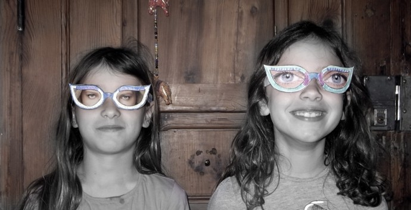

Pinterest
Instagram
ES
EN
DE
☰ Menu
Home
The House
Accessories
Decorate
Instruccions
Illustration
Custom water bottles
Notebook crafts and activities 01
App NOT ONLINE RIGHT NOW
Blog
Holidays
Christmas
Easter
Halloween
Carnival & costumes
Valentine’s Day
Birthday
Mother’s/Father’s Day
Back to school
Seasons
Spring
Summer
Autumn
Winter
What to do
Toys
Games
Printables
Food & recipes
Decoration
Painting
Experiments
Outdoors
Learning
Animals
Gifts & jewellery
Building & tricks
Other crafts
Material
Paper
Cardboard
Paper rolls
Recycling
Stones
Leaves & nature
Fabric & sewing
Home
›
Blog
Blog
Holidays
Christmas
68
Easter
43
Halloween
26
Carnival & costumes
36
Valentine’s Day
15
Birthday
13
Mother’s/Father’s Day
4
Back to school
10
Seasons
Spring
19
Summer
42
Autumn
22
Winter
32
What to do
Toys
79
Games
125
Printables
47
Food & recipes
95
Decoration
96
Painting
64
Experiments
19
Outdoors
64
Learning
67
Animals
113
Gifts & jewellery
89
Building & tricks
81
Other crafts
46
Material
Paper
94
Cardboard
61
Paper rolls
23
Recycling
121
Stones
33
Leaves & nature
53
Fabric & sewing
42
Costume
Magazine-eye glasses

Activity
Wish flags
Occasion
Valentine's cupcakes
Activity
Portrait train
Activity
Cardboard Draco
Activity
Drawing on newspapers
Without Category
German workshop in Valencia
Activity
Braided bead bracelet
Activity
The weather: cardboard weaving
Activity
Foam bag tag
Play
Bath tub mermaid
Material
Floating cork key ring
Activity
Marble spiral cone
Material
Chinese New Year garland
Activity
Saucer garden
Activity
School timetable
Without Category
Workshop in Valencia: your own dollhouse
Material
Champagne cork mushrooms
Toy
Princess skirt
Without Category
My grandmother won a contest!
Toy
Bath water wheel
Activity
Fruit crate doll's bed
Nut
Walnut rattle
Occasion
Gift ribbon bookmark
← Newer
Page 29 / 40
Older →